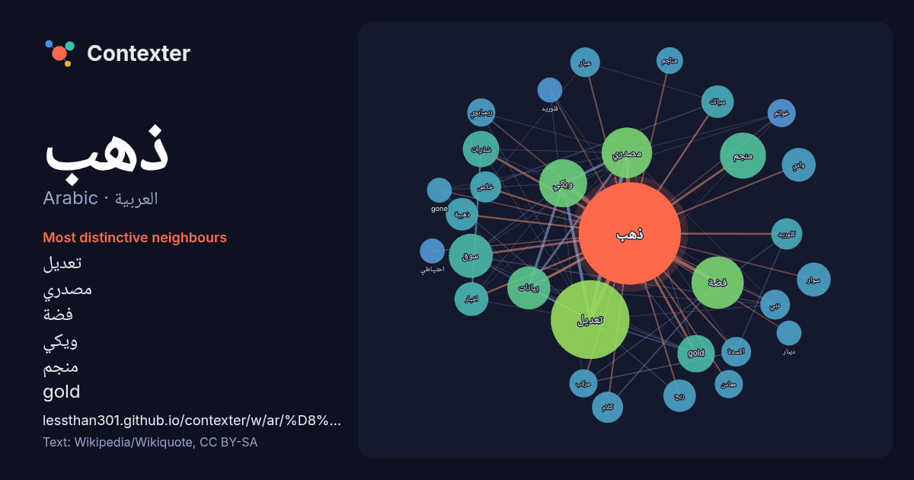

العربية · Arabic · word of the day list
ذهب
“gold” · The words found around it in 687 instances from Arabic Wikipedia, Wikiquote.

Most distinctive neighbours
- تعديل 54×
- مصدري 30×
- فضة 29×
- ويكي 27×
- منجم 24×
- gold 17×
- شذرات 16×
- سوار 14×
- سوق 13×
- سبائك 13×
- ريح 12×
- خالص 12×
- كلوريد 11×
- اخبار 11×
- عيار 11×
- اكسدة 10×
- ذهبية 10×
- خواتم 9.8×
- كلام 9.8×
- زيمبابوي 9.5×
× = how many times more often than in general Arabic Wikipedia text.
Most frequent neighbours
- تعديل 70
- فضة 31
- مصدري 29
- ويكي 26
- منجم 24
- سوق 22
- فيلم 22
- بيانات 21
- gold 16
- شذرات 15
- اخبار 13
- سوار 13
- وادي 13
- ذهبية 12
- ريح 12
- سبائك 12
- شركة 12
- قرية 12
- مدينة 12
- خالص 11
In context
- الذهب عنصر كيميائي رمزه Au وعدده الذرّي 79؛ وهو بذلك أحد العناصر القليلة ذات العدد الذرّي المرتفع والمتوفّرة طبيعياً في نفس الوقت. يوجد في الطبيعة على Wikipedia snippets · ذهب
- ذهب تعديل - تعديل مصدري - تعديل ويكي بيانات ذهب (الإنجليزية: Gold) هو فيلم إثارة أسترالي من إخراج أنتوني هايس وبطولة زاك إيفرون، سوزي بورتر وأنتوني هايس Wikipedia snippets · ذهب (فلم 2022)
- سلاسل ذهب مسلسل تلفزيوني سوري درامي بدأ عرضه لأول مرة بـ1 رمضان عام 1440هـ الموافق لـ6 آيار/مايو عام 2019م. مهيوب صائغ محنّك في سوق الذهب، يتميز بمعرفة Wikipedia snippets · سلاسل ذهب (مسلسل)
- ذهب في الليل تعديل - تعديل مصدري - تعديل ويكي بيانات ذهب في الليل (الإنجليزية: Gone in the Night) هو فيلم إثارة أمريكي لعام 2022، من إخراج إيلي هورويتز، Wikipedia snippets · ذهب في الليل (فلم)
- صفايح ذهب تعديل - تعديل مصدري - تعديل ويكي بيانات صفايح ذهب (الإنجليزية: Golden Horseshoes) هو فيلم دراما تم إنتاجه في تونس وصدر في سنة 1989. الفيلم من Wikipedia snippets · صفايح ذهب (فلم)
- قد يقصد من ذهب مع الريح : ذهب مع الريح : رواية للكاتبة الأمريكية مارغريت ميتشل. ذهب مع الريح : الفيلم الأمريكي الذي أُنتِج في عام 1939 عن رواية مارغريت Wikipedia snippets · ذهب مع الريح (توضيح)
- ذهب مع الريح (الإنجليزية: Gone with the Wind) فلم أُنتِج في عام 1939 عن رواية مارغريت ميتشل الشهيرة ذهب مع الريح. فاز الفلم بِـ 8 جوائز أوسكار، واختاره Wikipedia snippets · ذهب مع الريح (فلم)
- ذهب الليل أغنية لحنها وغناها الموسيقي المصري محمد فوزي (1918 - 1966) عام 1956 من كلمات حسين السيد. الأغنية موجهة للأطفال وتتألف من كلمات بسيطة، ولحن سهل Wikipedia snippets · ذهب الليل (أغنية)
More Arabic words
Precomputed on 2026-10-09 with default settings (±5 words, medium corpus). The interactive map can refresh it with live data.